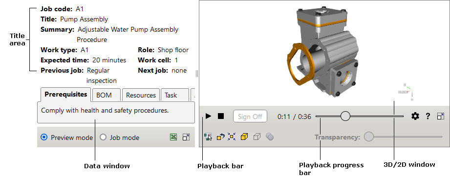

2Dイメージへのリンクを含むテキストは、点線(
対話型ドキュメントは、2つの異なるモードで使用することができます。
対話型ドキュメントのユーザーインタフェースは、データウィンドウと3D/2Dウィンドウの2つのワークスペースで構成されています。各ワークスペースには、独自の制御要素があります。
ヘルプを表示するには、対話型ドキュメントの右下にあるヘルプボタンをクリックします。
|  |
データウィンドウには、タイトル領域と、前提条件タブ、BOMタブ、リソースタブ、指示タブ、およびドキュメントタブが含まれます。
タイトル領域には、作業指示に関する一般情報が表示されます。例えば、ジョブコード、作業タイプ、予想される時間などです。
前提条件タブには、テクニカルプロシージャを開始する前に満たす必要がある要件が記されています。対話型ドキュメントが最初に開かれたとき、タブはアクティブになっています。
BOM(部品表)タブには、インデントされたパートリストが表示されます。各BOMレコードは、パート番号、説明、数量、および代替パート番号など、パートに関する情報を提供します。
BOMレコードをクリックすると、対応するアイテムが3Dウィンドウにフィットして強調表示されます。
BOMレコードの上にポインタを置くと、3Dウィンドウ内のレコードおよび対応するアイテムが強調表示されます。
プラス記号をクリックすると、階層が展開されます。
リソースタブには、テクニカルプロシージャを実行するために必要なリソースが記されています。
指示タブは、現在のタスク、必要なパート、必要なリソースのセクションで構成されています。現在のタスク セクションには、現在のタスクに対するテキストが表示されます。
テキストには、3Dアイテムおよび2Dイメージへのハイパーリンクを含めることができます。3Dアイテムへのリンクを含むテキストは、破線で下線が引かれます。下線付きテキストをクリックすると、対応するアイテムが3Dウィンドウにフィットして表示されます。
2Dイメージへのリンクを含むテキストは、点線( など)で下線が引かれます。下線付きテキストをクリックすると、2Dウィンドウに対応するイメージが開きます。
など)で下線が引かれます。下線付きテキストをクリックすると、2Dウィンドウに対応するイメージが開きます。
必要なパート セクションには、対応する3Dアイテムへのリンクを含むパートに対してのみBOMデータが表示されます。
必要なリソース セクションには、現在のタスクに必要なリソースが表示されます。
ドキュメントタブには、作業指示の全文が表示されます。
ジョブモードでは、サインオフ ボタンをクリックして、指示の次のタスクに移動することができます。前のタスクは、そのタスクに対してサインオフ ボタンがクリックされた日時を表示します(例えば、サインオフ: Wednesday, July 21, 2010 12:47:10 PM)。このデータはどこにも保存されていないため、日時の表示は現在のセッション内でのみ可能です。
プロシージャの再生中に、検査が必要です。 メッセージボックスが表示されることがあります。対応するタスクには、検査が必要です。 メッセージボックスで閉じる ボタンがクリックされた日時が表示されます(例えば、検査済み: Wednesday, July 21, 2010 12:48:57 PM)。日時の表示は、現在のセッション内でのみ可能です。
プレビューモードで、プロシージャの必要なタスクをクリックすると、ドキュメントタブでタスクが強調表示され、プロシージャの再生が有効になります。ジョブモードでは、現在のタスクのみが再生に使用することができます。
ドキュメントテキストには、3Dアイテムおよび2Dイメージへのハイパーリンクを含めることができます(指示タブを参照してください)。
3Dウィンドウは、ドキュメントタブに記述されたプロシージャの3D表現を示します。3Dウィンドウでは、再生バーを使用してプロシージャを再生し、マウスボタンを使用してナビゲートすることができます。3Dウィンドウの右上にあるロケータ(座標系の三軸など)を使用して、ユニットまたはパートの空間位置を決定できます。
3Dウィンドウでのプロシージャ再生を制御するボタン。
| コマンド | 目的 |
|---|---|
| 再生 | 停止または一時停止されている場合に、プロシージャの再生を開始します。 |
| 一時停止 | 現在のステップで再生を停止します。 |
| 停止 | 現在のステップを停止して、最初に巻き戻します。 |
| サインオフ |
ジョブモードで使用可能です。 次のタスクをアクティブにします。タスクがドキュメントタブで強調表示され、プロシージャの対応するモーメントが3Dウィンドウで再生されます。ドキュメントタブでの前のタスクは、そのタスクに対してサインオフ ボタンがクリックされた日時を示します。 |
|
設定 |
設定リストを表示または非表示にします。 速度。再生速度を設定します。 ビューポイントを凍結。選択されている場合、カメラが現在のビューにロックされるので、プロシージャ再生中にカメラの移動を防止します。 アラートメッセージを無効化。選択されている場合、再生中にプロシージャのアラートメッセージを無効にします。 PMI。選択されている場合、PMIデータが表示されます。製品製造情報(PMI)は、製品コンポーネントまたはサブシステムの製造に必要な3Dコンピュータ支援設計の非ジオメトリ属性を表します。 シーン光源。 光源の数と光源の位置を定義して、3Dウィンドウ内のモデルを照らします。 光源の相対位置がリストの右側に表示されます。 すべての光源はビューアと共に移動します。 ナビゲーションキューブを表示。3Dウィンドウで、ナビゲーションキューブを表示または非表示にします。ナビゲーションキューブには、エッジ、コーナー、およびフェースの、3つの異なるタイプのホットスポット領域があります。ナビゲーションキューブのエッジ、コーナー、またはフェースの上にポインタを置くと、対応する領域が強調表示されます。これらの領域を使用すると、標準ビューを切り替え、回転することができます。 サーフェスエッジを表示。選択されている場合、3Dウィンドウでのサーフェス境界の表示を有効にします。 アンチエイリアシング。3Dウィンドウ内のゆがみアーティファクトを最小化するテクニックをアクティブにします。 周囲の包蔵。3Dウィンドウで、アンビエントオクルージョンシェーディングおよびレンダリングテクニックをアクティブにします。 選択モード。3Dウィンドウで選択するオブジェクト表現を指定します。 色で強調表示 - 選択が強調表示されます。 選択したオブジェクトをX-レイ – 選択対象を除き、グレーの半透明で表示されます。 透過シェル - モデル全体の外側シェルが透明に表示され、選択されていない内部オブジェクトが非表示になります。 アウトラインホバーオブジェクト。選択対象の輪郭が描かれます。 |
再生の進行状況を表示します。バーをクリックすると、プロシージャの希望するモーメントを選択できます。
3Dウィンドウで選択されたオブジェクトのフィッティング、表示、非表示、および透明化のためのボタン。
| ユーザーインタフェース | ボタン | 目的 |
|---|---|---|
| 選択したオブジェクトを別のウィンドウで表示 |

|
有効な場合は、セカンダリ3Dウィンドウに選択内容を表示します。 |
| 透明度を無視 |

|
有効な場合、透明アイテムがユーザーのクリックに反応しなくなるので、3Dウィンドウ内の透明アイテムを通してクリックすることができます。 |
| すべて復元 |

|
非表示オブジェクトと半透明オブジェクトをすべて表示します。 |
| フィット |

|
選択したアイテムの境界ボックスを3Dウィンドウにフィットさせます。 |
| 表示 |

|
3Dウィンドウにおいて、前に非表示にした選択アイテムを表示します。 |
| 非表示 |

|
3Dウィンドウで選択したアイテムを非表示にします。 |
| すべての選択を解除 |

|
すべてのアイテムを選択解除します。 |
| 透明度 | 選択したアイテムの透明度の値を設定できます。透明度コマンドは、3Dウィンドウで1つまたは複数のアイテムが選択されている場合に使用できます。 |
選択したオブジェクトがセカンダリ3Dウィンドウに表示されます。
| ユーザーインタフェース | ボタン | 目的 |
|---|---|---|
| 中心に設定 |

|
3D モデルの回転中心を指定できます。 |
| 回転中心を表示 |

|
回転中心を非表示または表示することができます。 |
| すべてフィット |

|
3Dウィンドウ内の3Dモデル全体を完全に可視にします。 |
| 水平に整列 |

|
カメラの水平軸(縦方向軸ではない)を座標系の水平面に平行にします。 |
| 測定 |

|
距離を測定するツールを開きます。3Dウィンドウで、1つの点を1回クリックしてから、2番目の点を再度クリックします。2つの赤い点の間の距離が表示されます。垂直または水平面上に投影される点間の距離を取得するには、リストから投影平面の名前を選択します。長さの単位を変更するには、ユニットを選択します。引出し線の長さを設定するには、Hスライダをドラッグします。測定ツールを閉じた後に寸法線を表示するには、可視を維持を選択します。新しい点を設定するには、クリアをクリックするか、Escキーを押してから、3Dウィンドウで点を指定します。
WARNING 3Dイラストは実際の製品とは異なる場合があるので、測定結果をワークフローで直接使用しないでください。製造またはサービスに必要な寸法を取得するには、関連する技術文書を参照してください。 |
| 断面平面 |

|
平面によって切断されたかのようにモデルを表示します。コントロールを使用して、断面平面の設定(左、上、フロント)と回転(XおよびY)を行います。断面平面を移動するには、Dスライダをドラッグします。断面をミラーするには、反転を使用します。スライダの精度を改善するには、正確なモードを選択します。ツールを閉じた後に断面を表示するには、可視を維持を選択します。断面平面を選択の中心に移動するには、リセットをクリックします。 |
| フロント |

|
モデルを正面から表示します。 |
| バック |

|
モデルを背面から表示します。 |
| 左 |

|
モデルを左側から表示します。 |
| 右 |

|
モデルを右側から表示します。 |
| トップ |

|
モデルを上から表示します。 |
| ボトム |

|
モデルを下から表示します。 |
| 等角投影 |

|
等角投影ビューでモデルを表示します。 |
3Dウィンドウ内の任意の場所を右クリックして、コンテキスト依存メニューにアクセスします。
| コマンド | 目的 |
|---|---|
| リセット | ステップビューをリセットします。 |
| すべてフィット | 3Dウィンドウでアイテムを完全に表示するようにします。 |
| バージョン情報 | 対話型ドキュメント、3Dビューアおよび2Dビューアのバージョンを表示します。 |
2Dウィンドウには、データウィンドウに記述されているプロシージャに関連付けられているベクトルおよびラスタイメージが表示されます。
2Dウィンドウは、データウィンドウ(指示タブまたはドキュメントタブ)で2Dイメージのハイパーリンクをクリックすると、3Dウィンドウに置き換わります。
2Dウィンドウで右クリックして、使用可能なコンテキスト依存コマンドにアクセスします。コマンドのリストは、2Dウィンドウで使用している2Dビューアによって異なります。| オペレーション | ユーザーアクション |
|---|---|
| パン | 左ボタンを押したままマウスを移動します。 |
| ズーム | マウスホイールを前方または後方に回転します。 |
| ヘルプ |

|
ユーザーインタフェースのヘルプシステムを提供します。 |
| 3D |

|
3Dウィンドウを開きます。 |